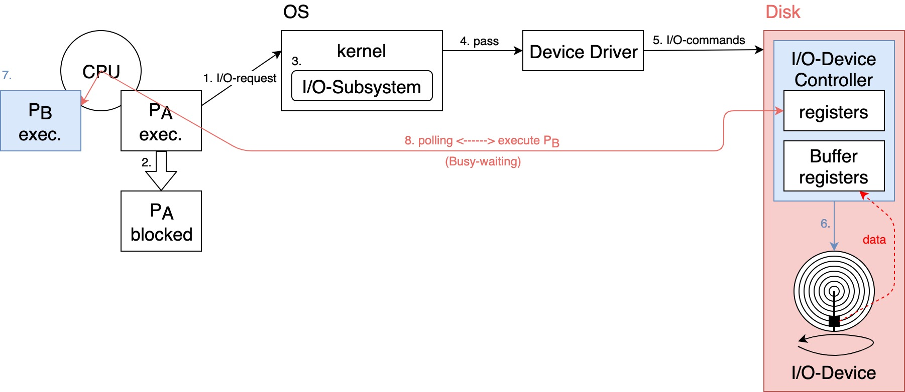
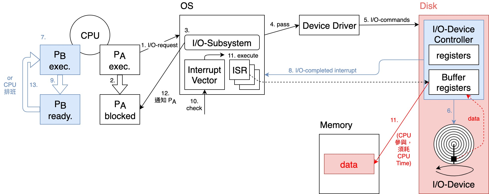

02. I/O 運作方式, Interrupt 介紹及 Hardware Resource Protection
I/O 運作方式
詢問式 I/O (Polling I/O)
- Define: 又叫 Busy-waiting I/O 或 Programmed I/O，Steps 如下:
- 執行中的 Process 對 OS 發出 I/O-request，希望 OS 提供某種 I/O 服務
Disk read a file.
- OS 收到請求後，(可能)會先暫停(block)該 Process，即此 Process 會放掉 CPU，置於 Waiting Queue 等待 I/O-completed
- OS(or kernel) 中的 I/O-Subsystem 會處理此請求
I/O-Subsystem 會檢查 Disk cache 是否命中，詳見「09. Disk Management」
- 命中: 從 Disk cache 取出 file 資料，不需執行 real I/O-operation
- 失誤: 需執行 real I/O-operation
- I/O-Subsystem 會 pass 此請求給裝置驅動程式(Device Driver)
device independent
- Device Driver 會依此請求，設定相關 I/O-commands 到 I/O-Device Controller(硬體)
- I/O-Device Controller 會指揮 I/O-Device 執行 real I/O-operation
- 此時，CPU 可能 idle，OS 可能會將 CPU 分派給其他 Process 使用
- CPU 會不斷地去 polling I/O-Device Controller 上相關 registers 之值，確定 real I/O-operation completed or not, or 有無 error
- 執行中的 Process 對 OS 發出 I/O-request，希望 OS 提供某種 I/O 服務

- 缺點: CPU 並未將全部的時間用於執行其他 Process 上，而是耗費大量時間於 polling I/O-Device Controller CPU utilization ，且 Process Throughput 亦
中斷式 I/O (Interrupted I/O)
- Steps 如下:
- 同Polling I/O
- 同Polling I/O
- 同Polling I/O
- 同Polling I/O
- 同Polling I/O
- 同Polling I/O
- 同Polling I/O
- 當 real I/O operation 完成時，I/O-Device Controller 會發出一個 "I/O-completed Interrupt" 通知 OS
- OS 收到通知後，(可能)會先暫停目前執行中的 Process，保存其狀態
execution ready state.
- OS 會依據 Interrupt ID 查詢中斷向量(Interrupt Vector)表，找出對應的中斷服務處理程式(Interrupt Service Routine, ISR)之位址
- 跳至 ISR 位址，ISR 執行
將 file 的資料從 I/O-Device Controller 之 Buffer registers 搬到 Memory 中
- ISR 完成，控制權交回 kernel I/O-Subsystem，通知 waiting Process 其 I/O-completed 及結果
- OS 恢復中斷之前的 Process 之執行，或交由 CPU Scheduler 決定下一個要執行之 Process
ready state execution.

- 優點: CPU 無需花費時間於 polling I/O-Device Controller，而是專心於 Process 之執行上 CPU utilization ，且 Process Throughput 亦 ，系統效能因而提升
- 缺點:
- Interrupt 之處理(Steps 9. ~ 12.)仍須耗費 CPU Time，此段時間 User Process 無法執行
若 real I/O operation 之時間很短(< Interrupt 處理時間)，則使用 Polling I/O 反而效能較好
- 若 Interrupt 發生頻率高，則 CPU utilization ( CPU Time 幾乎都花在Interrupt 之處理上)
- CPU 仍須耗費時間參與 I/O-Device Controller 傳輸資料至 Memory
以上兩點將為下方的 Direct Memory Access (DMA) 鋪路
- Interrupt 之處理(Steps 9. ~ 12.)仍須耗費 CPU Time，此段時間 User Process 無法執行